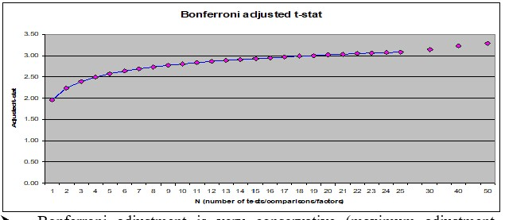

# First we start loading our favourite packages with the names we used to
import numpy as np
import pandas as pd
%matplotlib inline
import matplotlib.pyplot as plt
# import regression package
import statsmodels.api as sm
Robustness of Quantitative Strategies#
The more complicated a trading strategy, the more the in sample results are often a poor guide to how things behave out of sample
Looking for large t-stats only partially guard against that because you will be searching for things that have high t-stats and you are bound to find high t-stat strategies in sample even if no true large alpha strategy exists.
the literature on the biases that the “strategy discovery” process creates is vast and growing
Literature
Predicting Anomaly Performance with Politics, the Weather, Global Warming, Sunspots, and the Stars by Rober Novy Marx
A comprehensive look at the empirical performance of equity premium prediction
Inspecting whether your discovery is TRUE or just a statistical abnormality is science as much as it is art.
Patterns that are so statistically reliable that everyone can easily detect are unlikely to stay for long unless it is compensation for true risk.
So you are unlikely to find something that makes sense only based on the stats and you will need to use your economic logic to evaluate if you cna understand why the premium is as high as it is. We will discuss this less “quantitative” part of the process in the chapter Equilibrium Thinking.
Here we will highlight the problem and discuss a few statistical techniques.
Here are a few Twitter threads from people in the industry about this
It has this really nice plot

What does it tell us?
The basic problem of overfitting#
Any sample estimate is itself a random variable. The uncertainty in these estimates may encourage us to:
Select signals that are pure noise with no real predictive power.
Select real signals but overweight their importance to the model.
Reject signals that are real but that did not show up in the sample.
Make inaccurate assessments of strategy quality and poor resource allocation.
When choosing model weights, implicitly and explicitly (through optimization) we assign weights that exaggerate the overfitting problem.
Weights tilt toward signals with the most error. Leading to bigger degradation in out-of-sample performance going forward.
Suggestions to guard against overfitting#
Additional diagnostics
Robustness tests
Estimation/validation/Out of Sample analysis
Optimization?
Simulations?
Optimization makes it worse#
It is a form of in-sample regression.
Weights in model heavily determined by in-sample statistics, often the most extreme weights most likely to be off
Additional Diagnostics#
Strategy Sharpe Ratio
Report t-stat of mean return
Alpha and t-stat of alpha
Confidence intervals around key results including SR
Strategy performance with small perturbations ( say change horizon, skip a month)
Cumulative return and drawdown graphs
where the performance is coming form? Is it steady? When it does poorly?
Report percentage of observations with +/- 3 std events
Remove “influential data points”: Calculate fraction of data points needed to halve estimated Sharpe ratio.
When comparing Strategies, always do it over the same sample period!
Confidence intervals/T-tests for Sharpe Ratios#
If returns are normal
where T is the sample size and SR is the estimated Sharpe Ratio
what are the 95% Confidence intervals?
Distribution sampling#
Instead of assuming returns have a particular distribution we can sample from the realized distribution to obtain alternative realization of the world
Bootstrap - Draw from the data with replacement T times. This gives you a “new sample”. - Construct The sharpe ratio in this sample, save it - Do that M times and compute the standard deviation of the SR across samples - You can also directly look at the 5% worse realizations - This give you the different SR that can be produced by the same truth
Adjusting for Discarded Signals#
Often we look at many signals to find the one
This makes conventional thresholds for t-tests too small
There are many different adjustments for this
Boferroni T-stats

You go form 1.96 to 3 as you look at 20 signals instead of 1
It is a pretty conservative adjustment
Correction changes the most as you go from 1 to 5 signals
Robustifying your Backtests#
Calculate out of sample Sharpe ratios: Have a hold-out sample not used in backtest to test out of sample performance.
Be careful to not use out of sample results for tunning and model choice
When tuning/model choice is needed it is useful to have
Estimation
Test sample
Hold out sample
Add random noise to signals (some fraction of vol.) to slightly distort rankings and recompute Sharpe.
How robust are slight perturbations in the cross-sectional rankings?
Calculate the Sharpe ratio for a strategy that always eliminates the top 2% long and short positions (which are most likely error prone).
Keep track of your discarded ideas going forward
You need to calibrate your discovery process to be tough, but not too tough. Otherwise you will discard too many good signals.
Approaches for sample spliting#
Rolling window estimation
Use odd months to estimate signals and even months to compute returns and test signals. Repeat by switching odd and even months.
Split sample in half, estimation and test sample
Split in three: estimation, test for model selection, hold-out sample
Be very careful for information of the test sample to leak into the estimation.
For example, your idea might be motivated by a few months where you know these firms did well. Be sure to check the results are not driving by this
If you use result of the test sample to choose a model parameter–evaluate in a third holdout sample
Aplication 1: optimal combitation of market and value strategies
Below is our full sample optimal portfolio
We will split our sample into two halves:
take all observations from odd months in even years and even months in odd years (i.e., if starting in 1980, this would look like: 01/1980, 03/1980, … , 11/1980, 02/1981, 04/1981, … 12/1981, 01/1982, 03/1982, …); and
the opposite (take all observations from even months in even years and odd months in odd years).
A nice thing to do in halves is that we can cross-validated use first sample 1 as estiamtion sample and sample2 as test sample, and then invert
If you have lot of data one migh split the data in 5 folds and do the estimation in one and test on the rest.
# loading the data
import pandas_datareader.data as web
from datetime import datetime
start = datetime(1926, 1, 1)
ds = web.DataReader('F-F_Research_Data_Factors', 'famafrench',start=start)
df=ds[0][:'2021-3']
df.info()
<class 'pandas.core.frame.DataFrame'>
PeriodIndex: 1137 entries, 1926-07 to 2021-03
Freq: M
Data columns (total 4 columns):
# Column Non-Null Count Dtype
--- ------ -------------- -----
0 Mkt-RF 1137 non-null float64
1 SMB 1137 non-null float64
2 HML 1137 non-null float64
3 RF 1137 non-null float64
dtypes: float64(4)
memory usage: 44.4 KB
# lets define a function to calculate the Sharpe ratio
def SR(R,freq=12):
sr=R.mean()/R.std()*freq**0.5
return sr
Assets=df[['Mkt-RF','HML']]
Cov=Assets.cov()
ER=Assets.mean()
Vol_mkt=df['Mkt-RF'].std()
X=ER@np.linalg.inv(Cov)
# formula for unlevereaged portfolio vol
vol_unlevered=(ER@np.linalg.inv(Cov)@ER)**0.5
X_lev=X*(Vol_mkt/vol_unlevered)
Returns= Assets @ X_lev
SR(Returns)
0.49973547632746695
Can you construct the 95% Confidence interval for this Sharpe Ratio?
Formula based answer
Bootstrap based answer
Letss construct both samples by using a function that returns True if the number is odd and then apply this function to the months and years of our dataset.
# construct function that identifies if a number is odd
def is_odd(num):
return num % 2 != 0
# create a sample that selects the even years and odd months
evenyear_oddmonth=(is_odd(df.index.year)==False) & (is_odd(df.index.month)==True)
# create a sample that selects the odd years and even months
oddyear_evenmonth=(is_odd(df.index.year)==True) & (is_odd(df.index.month)==False)
# join the two samples
sample1=evenyear_oddmonth | oddyear_evenmonth
# creates the mirror sample
sample2=~sample1
Lets construct a function that takes the sample and returns the SR
# function gets data and sample and returns the returns of the strategy
def Strat_wgts(df):
X=df.mean()@np.linalg.inv(df.cov())
vol_unlevered=(X@df.cov()@X)**0.5
vol_mkt=df['Mkt-RF'].std()
X_lev=X*(vol_mkt/vol_unlevered)
return X_lev
Strat_wgts(Assets[sample1])
array([0.71684899, 0.8334495 ])
Strat_wgts(Assets[sample1])@Assets[~sample1].T
Date
1926-08 5.076258
1926-10 -1.739176
1926-12 1.836472
1927-01 3.740850
1927-03 -2.082113
...
2020-08 2.994213
2020-10 2.036777
2020-12 2.060502
2021-01 2.487178
2021-03 8.367087
Freq: M, Length: 569, dtype: float64
print('Optimal portfolio perfomance in sample 2 (estimation sample 1)')
print(SR(Strat_wgts(Assets[sample1])@Assets[sample2].T))
print('Market perfomance in sample 2')
print(SR(df[['Mkt-RF']][sample2]))
print('Optimal portfolio perfomance in sample 1 (estimation sample 2)')
print(SR(Strat_wgts(Assets[sample2])@Assets[sample1].T))
print('Market perfomance in sample 1')
print(SR(df[['Mkt-RF']][sample1]))
Optimal portfolio perfomance in sample 2 (estimation sample 1)
0.5389590626921715
Market perfomance in sample 2
Mkt-RF 0.502805
dtype: float64
Optimal portfolio perfomance in sample 1 (estimation sample 2)
0.452846286456286
Market perfomance in sample 1
Mkt-RF 0.38695
dtype: float64
What do we learn?
Lets modify our function to include the estimation of the alpha relative to the market
Lets wrap this in a function that computes this for us
def Analysis(Returns,Market):
results=pd.Series([],index=[],dtype=float)
results.at['Strategy:SR']=SR(Returns)
results.at['Strategy:std']=Returns.std()*12**0.5
results.at['MKT:SR']=SR(Market)
results.at['MKT:std']=Market.std()*12**0.5
# now run the regression
x= sm.add_constant(Market)
regresult= sm.OLS(Returns,x).fit()
results.at['alpha']=regresult.params[0]
results.at['t(alpha)']=regresult.tvalues[0]
return results
print('Results for test sample 2 (estimation sample 1)')
print(Analysis(Strat_wgts(Assets[sample1])@Assets[sample2].T,Assets.loc[sample2,'Mkt-RF']))
print('Results for test sample 1 (estimation sample 2)')
print(Analysis(Strat_wgts(Assets[sample2])@Assets[sample1].T,Assets.loc[sample1,'Mkt-RF']))
Results for test sample 2 (estimation sample 1)
Strategy:SR 0.538959
Strategy:std 18.232429
MKT:SR 0.502805
MKT:std 18.066091
alpha 0.168324
t(alpha) 1.438795
dtype: float64
Results for test sample 1 (estimation sample 2)
Strategy:SR 0.452846
Strategy:std 18.831038
MKT:SR 0.386950
MKT:std 18.989794
alpha 0.153165
t(alpha) 1.681847
dtype: float64
what do we learn?
What other diagnostics can you add to this function?
would it make sense to compute alpha with respect to the Fama-French 3 factor model–which includes HML as one of the factors?
Dradowns#
It is common to look at how lond are the periods where you are losing money on a strategy
This might inform you how sticky your clients need to be. For example might inform how long the lockup in your fund might need to be
This is also relevant for Hedge funds where hedge fund managers are compensated only when they go above the high-water mark
or much more basically how long are going to be the painful periods where you are losing money
# start by cumulating the returns
X=(Returns/100+1).cumprod()
# computing the running max for each asset
running_max = X.cummax()
# Calculate the drawdown by comparing the running_max with the current value of the portfolio
drawdown = (X - running_max)/running_max
drawdown.plot()
<AxesSubplot:xlabel='Date'>
Application 2: fine-tuning the look-back window
Now we will compare a variety of models to see which one works best outside of the test sample
So we will have the estimation sample where we will estimate the different models– which in this case will be strategies with different look-back windows
What is a look-back window?
It is the window the we use to estimate our moments
The trade-off here is:
If you make too short you just pick up noise
If you make too long the moments might not be that informative about future data
Particularly true in he case of volatility, but also true for correlations and expected returns
Particularly severe when dealing with individual assets and not characteristic-based strategies
We will split the sample in two.
The first half will be estimation+test,
second half will be hold out
holdout_sample=df.index>df.iloc[int(np.floor(df.shape[0]/2))].name
We will now do the estimation fine-tuning.
Lets start by building a code that gets our desired window, do the estimation and construct the return series on the test sample
window=36
df1=Assets[~holdout_sample].copy()
Returns=pd.DataFrame([],index=df1.index,dtype=float)
# Use data that is not in the holdout sample to estimate the strategy
# loop over the test sample
for d in df1.index[window:]:
# select the first 36 months of the sample ( and then add one more month at the tail and drop the last month on the head each time we loop over the sample)
df_temp=df1[d-window:d-1].copy()
# construct optimal portfolio given these 36 months
X=Strat_wgts(df_temp)
# save the returns of the strategy and the market on the FOLLOWING month
# this month does NOT enter the estimation of the strategy
Returns.at[d,'Strategy']= df1.loc[d] @ X
Returns.at[d,'Mkt-RF']= df1.loc[d,'Mkt-RF']
Returns
| Strategy | Mkt-RF | |
|---|---|---|
| Date | ||
| 1926-07 | NaN | NaN |
| 1926-08 | NaN | NaN |
| 1926-09 | NaN | NaN |
| 1926-10 | NaN | NaN |
| 1926-11 | NaN | NaN |
| ... | ... | ... |
| 1973-07 | -9.186490 | 5.05 |
| 1973-08 | 3.179297 | -3.82 |
| 1973-09 | -0.359387 | 4.75 |
| 1973-10 | 2.913735 | -0.83 |
| 1973-11 | 7.358294 | -12.75 |
569 rows × 2 columns
Note that we have no observations early on as we need at the 36 months to estimate and none in the second half, that is the sample that we will hold out
Returns=Returns.dropna()
Analysis(Returns['Strategy'],Returns['Mkt-RF'])
Strategy:SR 0.360352
Strategy:std 22.322705
MKT:SR 0.349431
MKT:std 21.225423
alpha 0.735406
t(alpha) 2.632149
dtype: float64
Now that we have this code we can put in a function so we can evaluate for different lookbacks
def RollingEval(df,window):
Returns=pd.DataFrame([],index=df.index,dtype=float)
for d in df.index[window:]:
df_temp=df[d-window:d-1].copy()
X=Strat_wgts(df_temp)
Returns.at[d,'Strategy']= df.loc[d] @ X
Returns.at[d,'Mkt-RF']= df.loc[d,'Mkt-RF']
return Returns
Returns=RollingEval(Assets[~holdout_sample],36)
Returns.plot()
Returns=Returns.dropna()
Analysis(Returns['Strategy'],Returns['Mkt-RF'])
Strategy:SR 0.360352
Strategy:std 22.322705
MKT:SR 0.349431
MKT:std 21.225423
alpha 0.735406
t(alpha) 2.632149
dtype: float64
windows=[6,12,24,36,48,60,72]
results=pd.DataFrame([],index=[],columns=windows,dtype=float)
for w in windows:
Returns=RollingEval(Assets[~holdout_sample],w)
Returns=Returns.dropna()
results.loc[:,w]=Analysis(Returns['Strategy'],Returns['Mkt-RF'])
results
| 6 | 12 | 24 | 36 | 48 | 60 | 72 | |
|---|---|---|---|---|---|---|---|
| Strategy:SR | 0.339344 | 0.593013 | 0.388520 | 0.360352 | 0.398544 | 0.427686 | 0.353257 |
| Strategy:std | 35.943622 | 26.322347 | 23.458076 | 22.322705 | 21.383926 | 20.388704 | 18.834621 |
| MKT:SR | 0.401424 | 0.396024 | 0.375995 | 0.349431 | 0.395619 | 0.442285 | 0.599573 |
| MKT:std | 20.961079 | 21.050924 | 21.156650 | 21.225423 | 20.875654 | 20.531690 | 19.393674 |
| alpha | 1.085571 | 1.356543 | 0.792946 | 0.735406 | 0.789604 | 0.774403 | 0.473750 |
| t(alpha) | 2.467810 | 4.190904 | 2.717958 | 2.632149 | 2.916528 | 2.947537 | 1.919127 |
What else would you want to look at before peeking at the hold out sample?
Recall that once you look, you have to stop!
Is this pattern consistent with a better more reliable estimate of Expected returns? And Volatilities? And correlations?
How to figure out where the results are coming from?
# #hold out sample results
#w=?
# Returns=RollingEval(Assets[holdout_sample],w)
# Returns=Returns.dropna()
# Analysis(Returns['Strategy'],Returns['Mkt-RF'])
So what do you conclude?
Publication bias (or Famous bias or incubation bias…)#
We discussed that we often look at past performance exactly because a strategy did well. This mechanism of selection renders our statistical analysis biased in the direction of findings that the strategy is amazing.
It is often hard to deal with this because you need all the data of strategies that look like the one you are interested from the perspective of someone in the start of the reliant sample. That is hard.
One way to deal with this is to use some hard metric of saliency.
For example, check when Bitcoin became popular and we did our analysis after that.
See when a fund manager became well known because of his/her performance. While google trends is only available after 2004 there is data from New York Times and Wall Street Journal that allows you to go back to the start of the Last century. (for example, I use data like that that in this paper)
A setting where we can do this very cleanly is in the context of academic work. We know exactly when the paper was first published and what the sample that was used there
A nice paper that investigates this for a bunch of strategies is Does academic research destroy stock return predictability?
Application: Evaluating the publication bias in Fama French 1996, Multifactor Anomalies…
The original paper has the following table

You see here that the sample runs from 63 to 93. Back in 93 we didn’t have digitalized accounting data that went back to the 30’s
Looking at the very last row we see that the alpha of the HML withresepect to the market is enormous, 0.56% per month, and it has a negative beta with the market!
so now we will look at two different samples that the authors never looked before doing their study.
The pre 63 sample
the post 93.
sample1=df.index<df.loc['1963-7'].name
sample2=df.index>df.loc['1993-12'].name
sample3=((df.index>=df.loc['1963-7'].name) &(df.index<=df.loc['1993-12'].name))
def Strategy(df1,sample):
results=pd.Series([],index=[],dtype=float)
x= sm.add_constant(df1[sample]['Mkt-RF'])
y= df1[sample]['HML'].copy()
regresult= sm.OLS(y,x).fit()
results.at['HML:SR']=SR(y)
results.at['MKT:SR']=SR(df1[sample]['Mkt-RF'])
results.at['alpha']=regresult.params[0]
results.at['beta']=regresult.params[1]
results.at['t(alpha)']=regresult.tvalues[0]
results.at['AR']=regresult.tvalues[0]/regresult.resid.std()
W=df1[sample].mean()@np.linalg.inv(df1[sample].cov())
W=W/np.sum(W)
results.at['HML weight on MVE']=W[1]
return results
print('Pre publication sample')
print(Strategy(df[['Mkt-RF','HML']],sample1))
print('Publication sample')
print(Strategy(df[['Mkt-RF','HML']],sample3))
print('Post publication sample')
print(Strategy(df[['Mkt-RF','HML']],sample2))
Pre publication sample
HML:SR 0.346962
MKT:SR 0.457366
alpha 0.113160
beta 0.371094
t(alpha) 0.661317
AR 0.185219
HML weight on MVE 0.342709
dtype: float64
Publication sample
HML:SR 0.608203
MKT:SR 0.325699
alpha 0.542778
beta -0.207224
t(alpha) 4.257801
AR 1.755981
HML weight on MVE 0.696805
dtype: float64
Post publication sample
HML:SR 0.079270
MKT:SR 0.580553
alpha 0.113256
beta -0.054502
t(alpha) 0.637514
AR 0.201533
HML weight on MVE 0.228248
dtype: float64
what do we learn?
In the Pre-publication sample HML has a respectable SR, but the asset is much more correlated with the market so it’s betas with respect to the market leaves only a statistically insignifcant 0.37% per month, 1.2% per year.
Thus in the pre-sample the HML has a nice SR but the CAPM works so you would not have gained/lost too much of tilting your portfolio towards the HML strategy
In the post-publication sample the results are very ugly
Sharpe ratio is now 0.08–compared with the 0.58 SR on the market
the alpha is still about the same as in the pre-publication, but now the betas become negative
the HML premium goes away almost completely
To have a sense of the shift we can look at the risk-return trade-off of the market and HML across samples.
The optimal weight on HML shifts from 0.72 in the publication sample to 0.34 in the pre publication and 0.2 in the post publication
someone that jsut invested on the market would be actually be closer to the optimal portfolio than someone that invested 0.7 in HML
Does that mean it was data snooping?
We don’t know. It is possible that the publication drove people to the strategies which made the resuls go away goign forward. This paper I cited before argues that this is the case